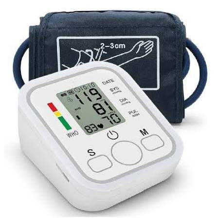
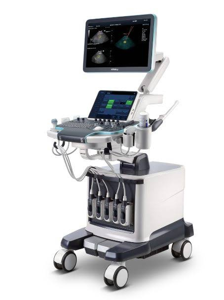
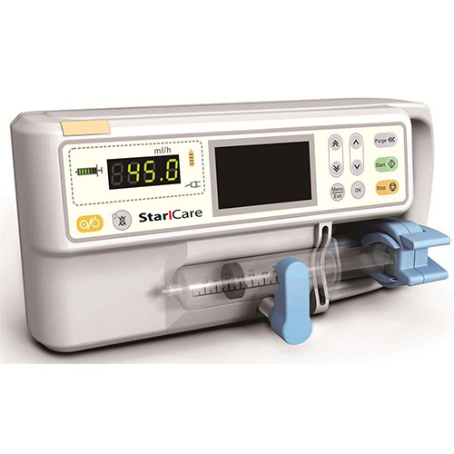
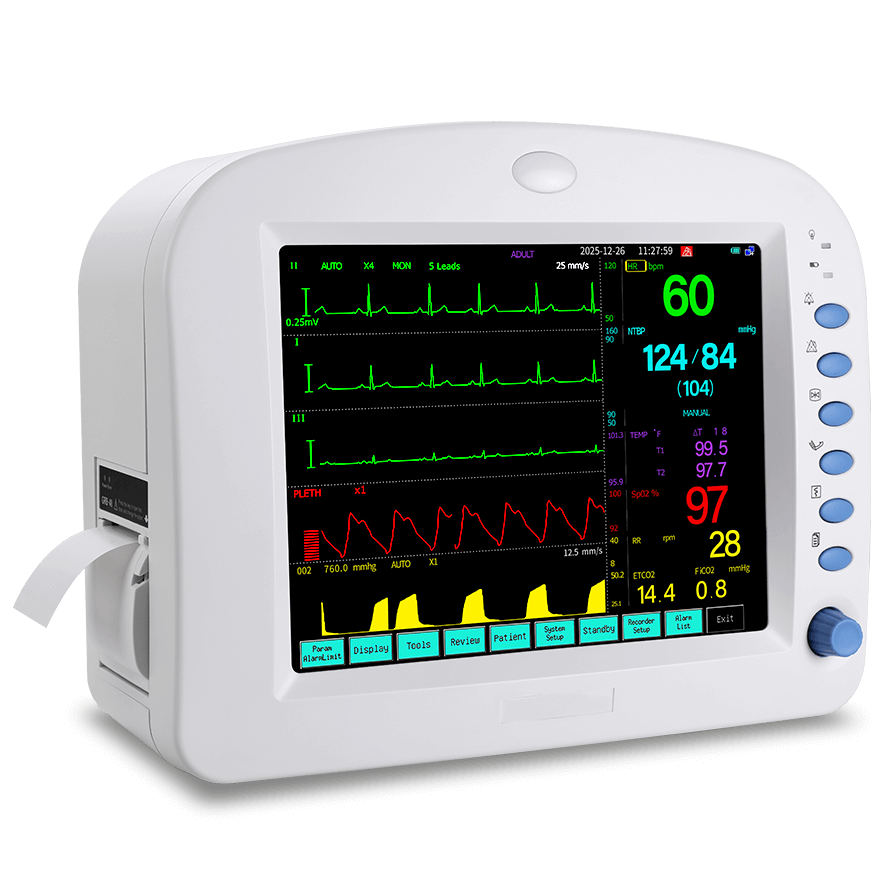
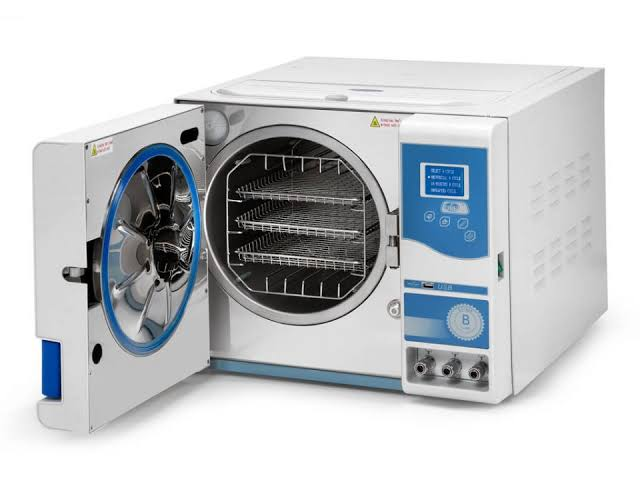

💡 Faites glisser les onglets et cliquez sur les points pour découvrir les composants cachés !






1. L'Écran
Un microprocesseur traduit les signaux électriques en chiffres.
2. Le Brassard
Un capteur de pression convertit l'air en signaux électriques.
1. La Sonde
Des cristaux piézoélectriques vibrent pour émettre des ultrasons.
2. L'Écran
Transforme les échos en images en temps réel.
1. La Bandelette
Réagit au contact du sang pour créer une réaction chimique.
2. La Puce
Mesure le courant électrique et l'affiche en taux de sucre.
1. L'Écran de Contrôle
Il affiche le débit (ml/h) et la dose programmée. C'est le "cerveau" qui permet à l'infirmier de régler la vitesse d'injection.
2. Le Mécanisme (Le Moteur)
Un moteur pas-à-pas, caché sous le boîtier, actionne la tête de pousse bleue. Il avance millimètre par millimètre pour injecter le produit en continu.
1. L'Écran
Affiche le rythme cardiaque, la saturation et la tension en temps réel.
2. Les Capteurs
Électrodes envoyant les signaux du patient à l'appareil.
1. La Cuve
Une chambre hermétique où la vapeur monte à plus de 134°C.
2. Le Panneau
Gère la pression et la durée de stérilisation.

Alfred
Ingénieur Mécatronicien.
Il démonte et répare les équipements médicaux.